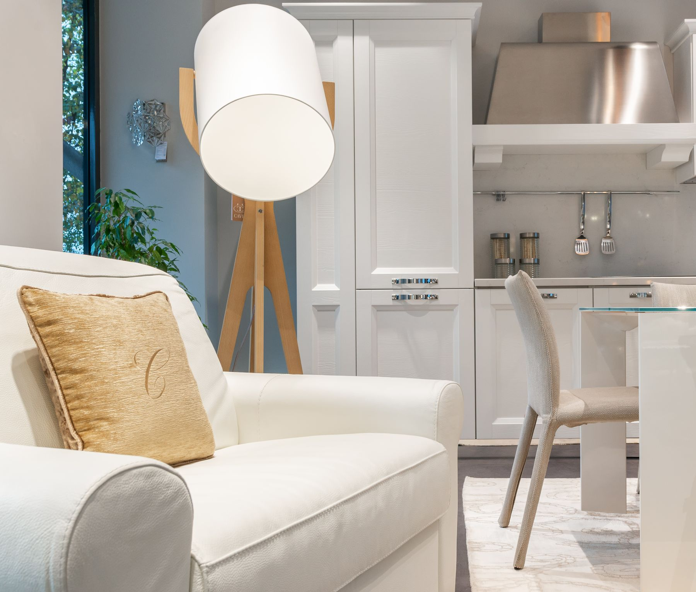
Первый объектКвартиры · Новочеркасск и рядом
Первая квартира в своём городе
Баланс бюджета, состояния, транспорта и понятных расходов после покупки.
- бюджет
- состояние
- маршруты
Недвижимость в Новочеркасске.
От первого выбора — до передачи ключей.
 47°25′ N 40°06′ E
47°25′ N 40°06′ E
Начните с того, что важно вам.
Район, пространство и следующий шаг — вместе с офисом.

Первый объектБаланс бюджета, состояния, транспорта и понятных расходов после покупки.
 Для семьи
Для семьи
Планировка, хранение, инфраструктура и удобство повседневных маршрутов.
 Новый этап
Новый этап
Свяжем подготовку к продаже, поиск нового жилья и сроки двух частей сделки.
 Городской дом
Городской дом
Свой двор и привычная городская жизнь: подъезд, парковка и инфраструктура рядом.
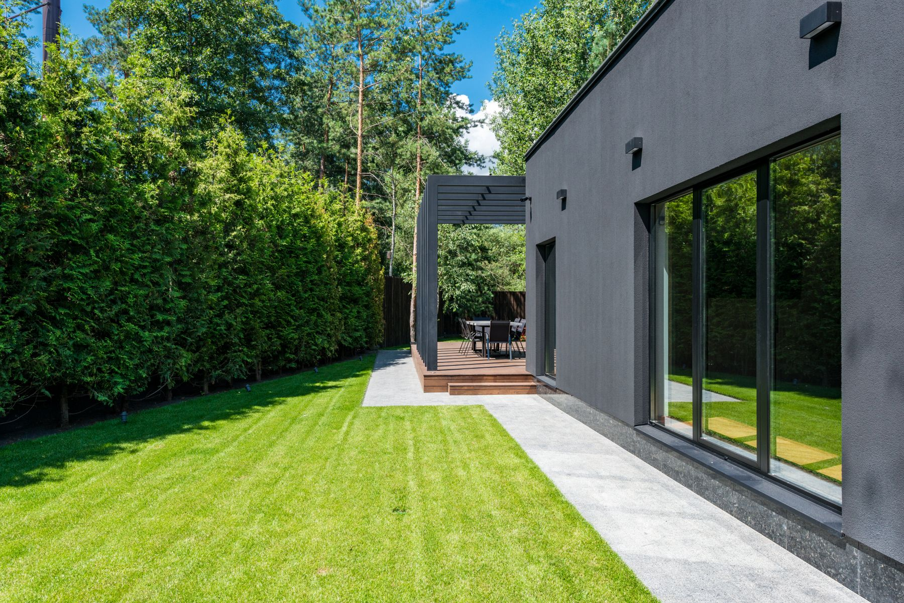
Для семьиПланировка для семьи, приватность, зелёный двор и место для новых планов.
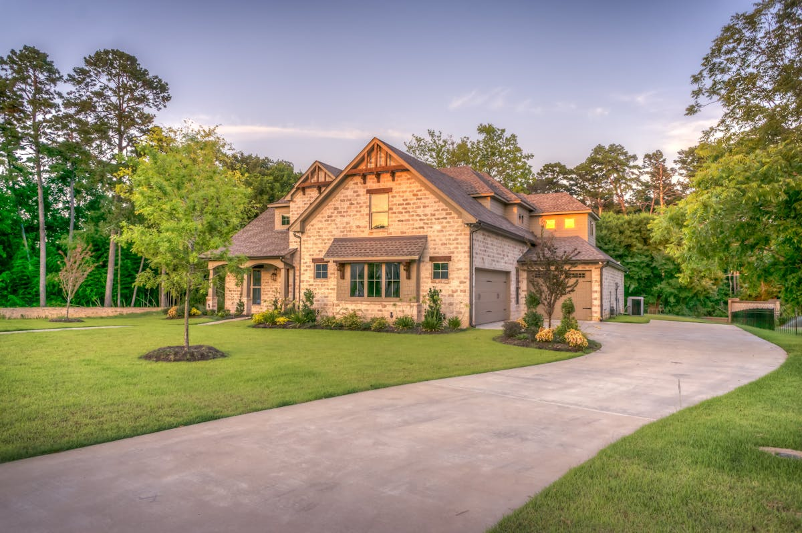
С перспективойОценим состояние, коммуникации и объём будущих работ до решения о покупке.
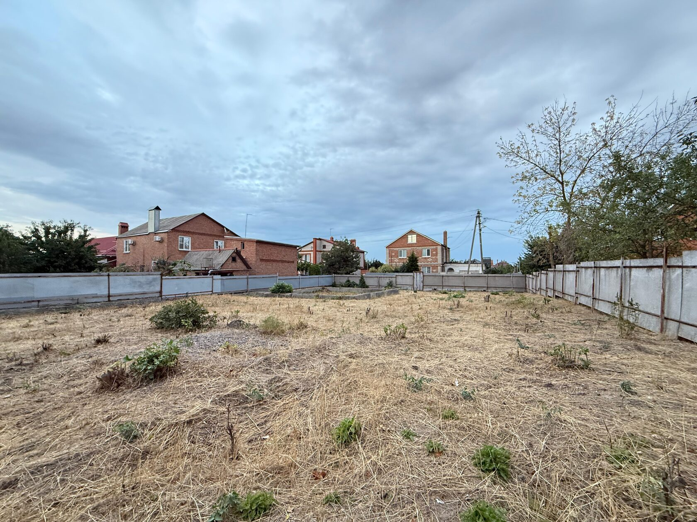
Под строительствоРазмер, форма, подъезд и окружение — в связи с вашим будущим проектом.
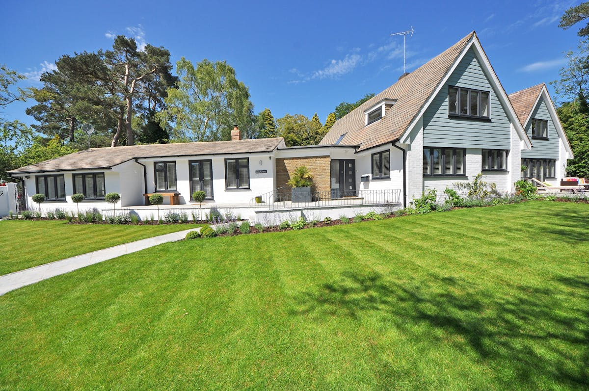
Ближе к природеПодберём направление с учётом ежедневных поездок и желаемого пространства.
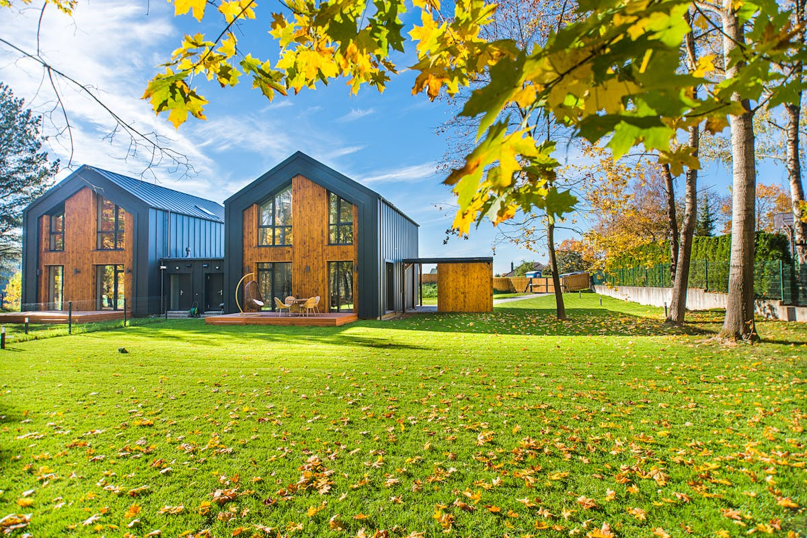
Долгий горизонтНазначение, ограничения и расходы на обустройство под ваш сценарий использования.
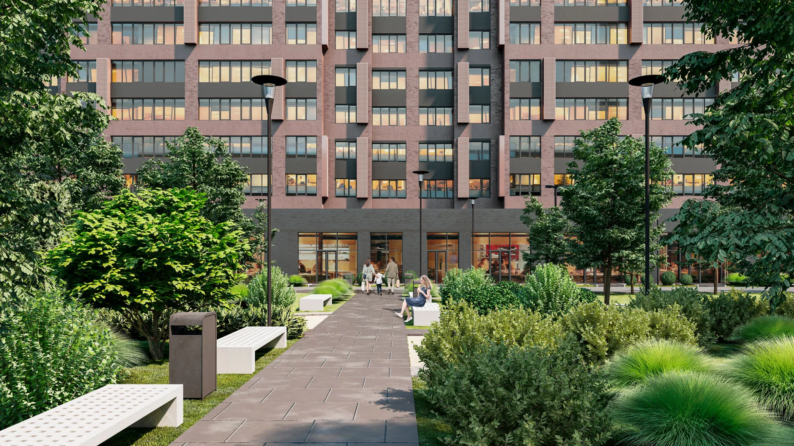
Среда для жизниМаршруты, озеленение, приватность и удобство пространства вокруг дома.
Полезная площадь, хранение, этаж и возможность адаптировать жильё под себя.
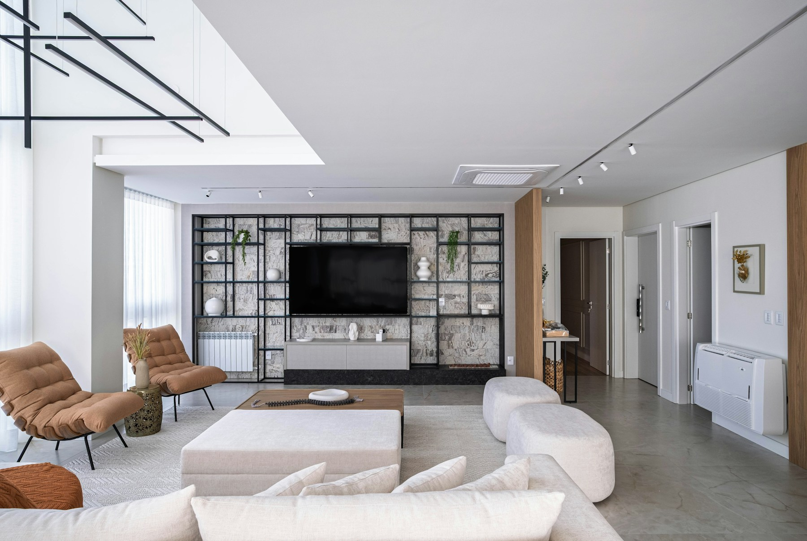
ГотовностьУчтём отделку, сроки получения квартиры и расходы на обустройство и переезд.
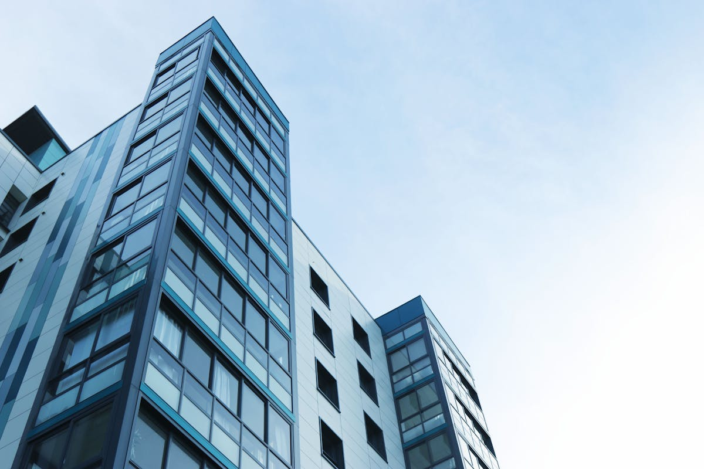
Для командыРасположение, доступ, рабочие зоны и парковка под формат вашей команды.
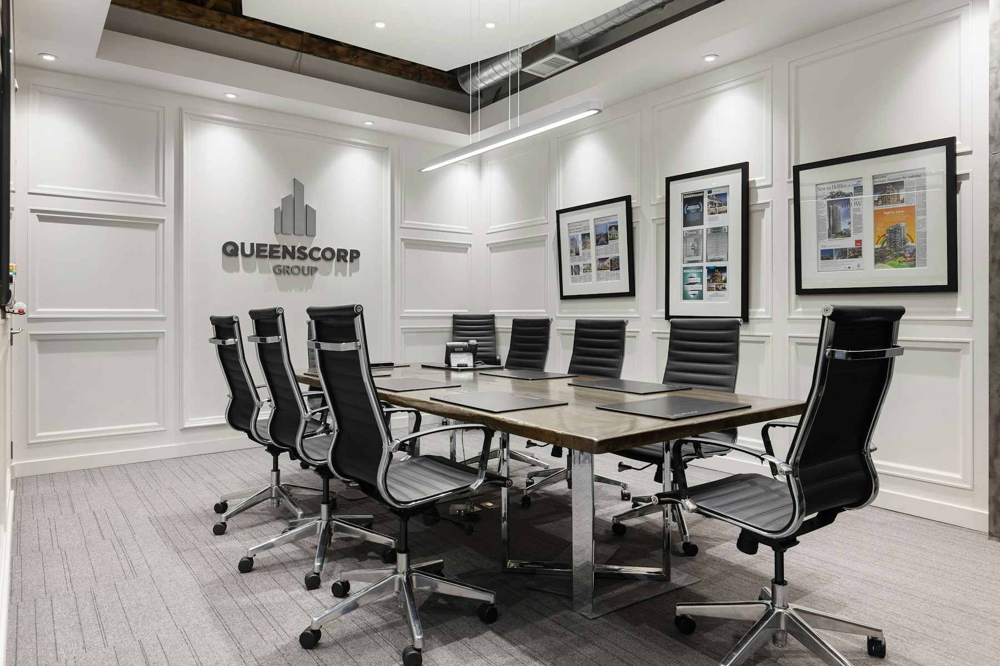
Для клиентовОценим вход, окружение, инженерные возможности и требования вашего дела.
Видимость, подходы, разгрузка и возможность разместить нужный вам формат.
На каждый день
Срок аренды, привычный маршрут, мебель и полный ежемесячный бюджет.
Больше свободы
Планировка, участок и условия содержания дома на весь период аренды.
На время перемен
Временное жильё, когда важно спокойно связать продажу, покупку и переезд.
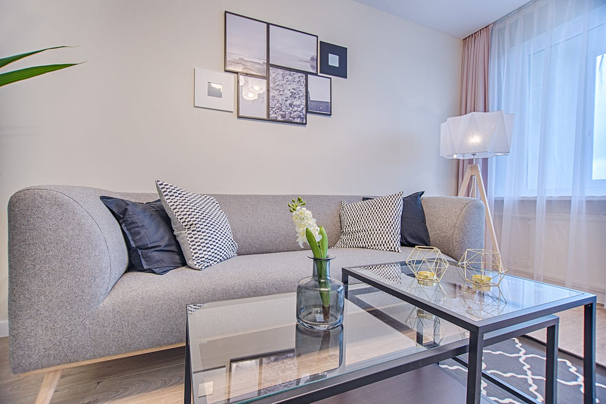
Своё пространствоСравним бюджет, дорогу до работы или учёбы и условия использования общих зон.
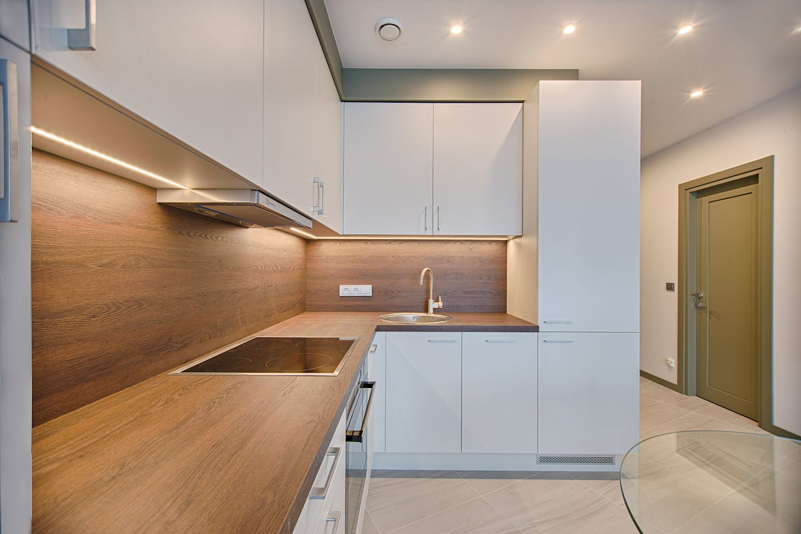
Компактный форматПосмотрим на состояние, расходы и фактическое устройство пространства.
Уточним статус помещения, документы, состав имущества и порядок пользования.
Фотографии иллюстрируют форматы подбора. Конкретные предложения, цены и наличие уточняются в офисе.
Все направления разделаЧетыре ответа — и у вас готовые критерии поиска. Посмотрите варианты или сохраните запрос для разговора с агентом.
Предпочитаю обсудить лично999 999 ₽
Сведения из публичных объявлений офиса на Циане. Цена и наличие требуют подтверждения перед просмотром; фотографии — в исходных объявлениях. Профиль офиса ↗
Посмотрите, как различаются направления. Выберите место под свой привычный маршрут.
Квартира, ремонт, переезд, резерв. Посчитайте будущую покупку целиком и оцените платёж по своим условиям кредита.
Рассчитать мой бюджет Только ипотечный платёж
Обсудим позиционирование объекта, подготовку, показы и условия сделки. Вы понимаете, что происходит на каждом этапе.

За сайтом — конкретный офис и люди в вашем городе. Александр Зеленьков и команда Домиан на Народной: можно приехать, задать вопросы и обсудить вашу задачу лично.
Познакомиться с командойОбсудите ваш вопрос и удобное время встречи в офисе.
Начните с главного. Остальное обсудим применительно к вашей ситуации.
Стоимость зависит от объекта и состава работ. Обсудите условия с офисом до начала работы: что входит в услугу, когда происходит оплата и какие расходы оплачиваются отдельно.
Начните с описания вашей недвижимости и критериев будущей покупки. На встрече обсудим взаимосвязанные сроки продажи, расчётов и переезда.
В каталоге указаны сведения из публичных объявлений. Перед просмотром позвоните в офис: специалист уточнит наличие, цену и параметры выбранного варианта.
Посмотрите схему направлений и сравнение районов. Отметьте привычные маршруты, важные места и формат жилья — с этими критериями проще обсуждать конкретные адреса.
Сравнить районы ↗Расскажите о задаче. Район, объект и следующий шаг обсудим вместе.